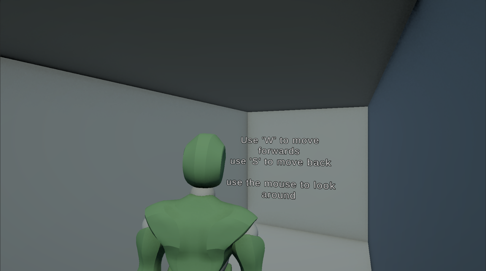
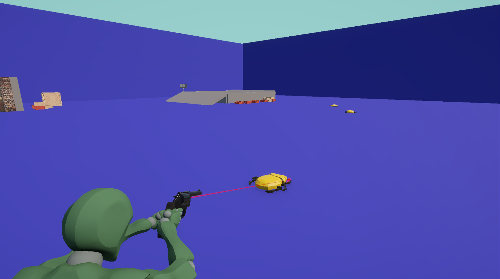
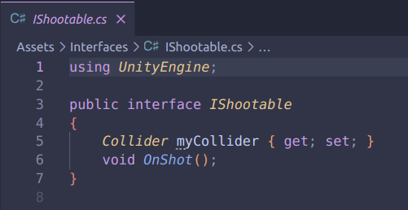
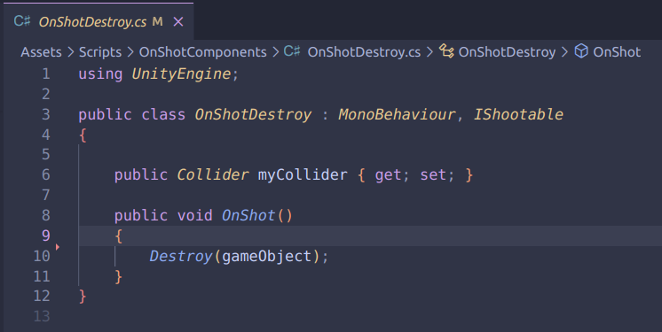
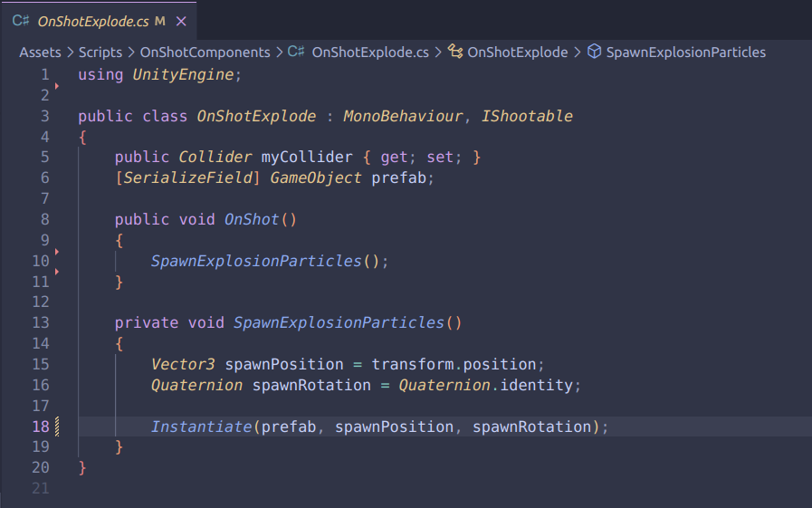
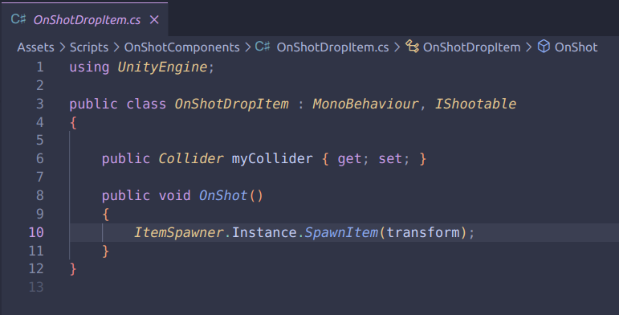

Scarab Shooter is een project gemaakt tijdens de opdracht ReusableComponents. Het focuste op SOLID principes en Single Responsibility.
Ik heb movement geïnspireerd op Resident Evil 4 en reusable components zoals OnShotDestroy, OnShotExplode en OnShotDropItem toegevoegd.
Ik heb geleerd om Interfaces, Events en Delegates beter toe te passen in Unity.
Animaties via Mixamo, modellen gemaakt in Blender.



